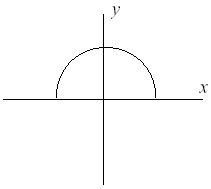

题目描述
Fred想在路易斯安那建一所自己的房子，如果要开发这块地，他了解到路易斯安那正在每年缩水50平方英里，原因是密西西比河的侵蚀。Fred想在这块地上安度余生，他想知道几年后，房子是否
会被侵蚀。
做了一些调查研究后，Fred了解到陆地的陷入是一个半圆形，圆心坐标在(0,0)，刚好半圆边缘的直径在X轴上。X轴以下的都在水中，一开始第一年，半圆的面积是0。如图所示的半圆正在逐年
扩大。

输入
第一行是一个正整数N，表示有N组测试数据。
接下来的N行，每行包含一个坐标X和Y，表示Fred想建房子的坐标，都是浮点数，单位为英里，Y值大于0，(0,0)坐标不会出现。
输出
每组测试输出一行。必须按照如下格式：
"Property N: This property will begin eroding in year Z."
N表示测试数据编号，从1开始，Z表示在Z年年底，Fred的房子会陷入水中，即包含在半圆中，Z必须是一个整数。注意：这个点要么在半圆内，要么在半圆外，不会在边界上。
在整个数据输出的结尾，输出"END OF OUTPUT."
样例输入
2
1.0 1.0
25.0 0.0
样例输出
Property 1: This property will begin eroding in year 1.
Property 2: This property will begin eroding in year 20.
END OF OUTPUT.
题意
还没写,坐等大佬!
JAVA解法
还没写,坐等大佬!
C++解法
#include<iostream>
#include<cmath>
using namespace std;
bool Judge(double x,double y,double r)
{
double dis;
dis=sqrt(x*x+y*y);
if(dis<r)
return true;
else return false;
}
int main()
{
int n,i,year;
double x,y,r;
const double PI=3.141592653;
while(cin>>n)
{
for(i=1;i<=n;i++)
{
cin>>x>>y;
year=1;
while(true)
{
r=sqrt(100.0*(double)year/PI);
if(Judge(x,y,r))
{
cout<<"Property "<<i<<": This property will begin eroding in year "<<year<<"."<<endl;
break;
}
year++;
}
}
cout<<"END OF OUTPUT."<<endl;
}
return 0;
}